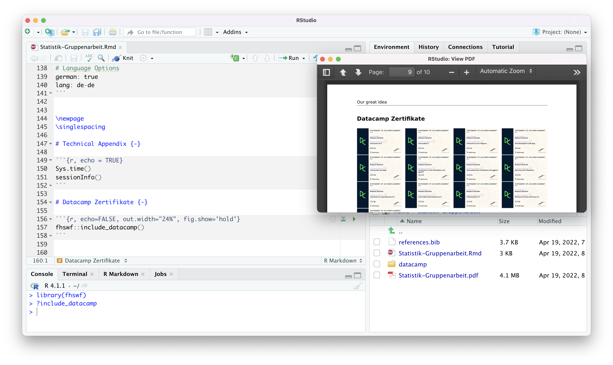

Kapitel 14 FHSWF Package
Für die Bearbeitung im Rahmen des Kurses steht Ihnen das fhswf Package zur Verfügung. Dieses ergänzt R um einige spezielle Funktionen, stellt weitere Datensätze bereit und installiert Vorlagen (Templates) für Seminar-, Gruppen- und Abschlussarbeiten sowie für Präsentationen.
14.1 Installation
Das fhswf Package befindet sich aktuell noch in der Entwicklung und ist daher noch nicht im zentralen offiziellen Package Archiv (CRAN) gelistet. Für die Installation benötigen Sie eine Funktion aus dem Paket remotes, dass einmalig installiert werden muss. Die jeweils neuste fhswf-Paketversion erhalten Sie mit dem folgenden Programmcode.
14.2 Template
Nach der Installation des fhswf Packages, müssen Sie die erforderlichen Werkzeuge für die Nutzung des Rmarkdown Templates installieren und initialisieren. Dafür müssen die folgenden Befehle ausgeführt werden.
tinytex::install_tinytex() # LaTeX installieren
fhswf::install_fhswf() # Fehlende LaTeX Pakete installierenDer Installationsprozess ergänzt eine Vielzahl von LaTeX Komponenten und benötigt je nach Leistung und Auslastung des benutzten Computers etwa 30 Minuten.
14.3 Nutzung des Templates
Um das Template fhswf-seminarpaper nutzen zu können, klicken Sie unter
File auf New File und dann auf R Markdown....
Anschließend öffnet sich ein Fenster, in dem Sie auf “From Template” klicken und dann sollte dort “FHSWF - Seminarpaper (pdf)” aufgelistet sein (siehe Abbildung 14.1). Dieses Template klicken Sie dann an, geben unter “Name” (siehe Abbildung 14.1) einen Namen für die Rmd-Datei ein, bestätigen dies mit OK und das Template öffnet sich anschließend (es wird ein Ordner mit dem von Ihnen angegebenen Namen erstellt, in dem alle für das Template erforderlichen Dateien abgespeichert sind).
Figure 14.1: Aufruf des Templates FHSWF - Seminarpaper (pdf) aus dem R-Paket fhswf (Buchwitz 2022).
Verweis auf Quellen und Quellenverzeichnis
Um auf die von Ihnen verwendeten Quellen im Text zu verweisen und um diese einschließlich der von Ihnen genutzten R-Pakete im Quellenverzeichnis anzuführen, nutzen Sie das fhswf Seminarpaper Template wie folgt:
Indem Sie das Template FHSWF - Seminarpaper verwenden, wird eine Bib-Datei namens references automatisch mitgeladen. In dieser Datei sehen Sie Einträge, die jeweils für beispielhafte Quellen angelegt worden sind, wie z.B.:
@ARTICLE{BC64,
title = {An analysis of transformations},
author = "Box, George E P and Cox, David R",
journal = "Journal of the Royal Statistical Society. Series B",
volume = 26,
number = 2,
pages = "211--252",
year = 1964
}Für die von Ihnen genutzten Quellen legen Sie entsprechend einzelne Einträge in references.bib an. Im Text (in R Markdown) verweisen Sie dann auf die verwendeten Quellen mithilfe des @-Symbols wie z.B. @BC64 (BC64 ist eine ID für die entsprechende Quelle, diese ID darf keine Leerzeichen enthalten). Im - basierend auf dem R Markdown-Dokument - generierten PDF-Dokument erscheinen dann entsprechend der/die Autor(en) und das Erscheinungsjahr. Wenn Sie das fhswf-seminarpaper Template öffnen, sind im Abschnitt Using Citations Beispiele zum Thema Zitation gegeben. Sind Ihre Quellen in der Bib-Datei angelegt und haben Sie auf diese im Text verwiesen, wird automatisch ein Literatur- bzw. Quellenverzeichnis erstellt.
Möchten Sie Quellen, auf die Sie nicht im Text verweisen, manuell zum Quellenverzeichnis hinzufügen, legen Sie ebenfalls entsprechende Einträge in der Bib-Datei an und rufen diese über “\nocite{IDderQuelle}” in R Markdown auf.
14.4 Wissenschaftliches Arbeiten in R Markdown
Um das wissenschaftliche Arbeiten und Schreiben in R Markdown zu erleichtern, wurde das FHSWF Seminarpaper Template mit Hinweisen zum Thema wissenschaftliche Sprache, zur Erstellung von Tabellen, Abbildungen, Gleichungen, zur Darstellung von Code, zur Zitation etc. gefüllt. Diese können über nachfolgende Links heruntergeladen werden.
| Description | R script |
|---|---|
| R Markdown Datei: FHSWF Template mit Notizen und Hinweisen | FHSWF Template mit Hinweisen (.Rmd) |
| PDF Datei: FHSWF Template mit Notizen und Hinweisen | FHSWF Template mit Hinweisen (.pdf) |
| bib-Datei des mit Hinweisen versehenen FHSWF Templates | references.bib |
14.5 Datacamp(-zertifikate)
Komfortables Einbetten der Datacamp Zertifikate in das erzeugte PDF erlaubt die Funktion fhswf::include_datacamp(). Dazu müssen die PDF Dokumente in einem Unterorder des Seminararbeits-Projektes abgelegt werden. In der Standardeinstellung nutzt die Funktion fhswf::include_datacamp() einen Ordner mit dem Namen datacamp. Die Dateinamen der Zertifikate und der Dateipfad sollten keine Sonderzeichen enthalten, da dies häufig zu Problemen führt. Auch Leerzeichen im Namen der Zertifikate sollten vermieden werden. Die Funktion fhswf::include_datacamp() benennt die PDF Dateien der Zertifikate (in der Standardeinstellung) automatisch um, sodass bei der Erstellung des Seminarpapers weniger Fehler auftreten. Der nachfolgende Screenshot zeigt den notwendigen Programmcode für die Einbettung der Zertifikate und das daraus resultierende Ergebnis. Dabei werden die PDF Dokumente bewusst in der geringen Größe eingebettet - diese sind detailreich, hereinzoombar und daher für die Korrektoren gut prüfbar. Der Programmcode ist ebenfalls auf der Hilfeseite ?include_datacamp() einsebar.
